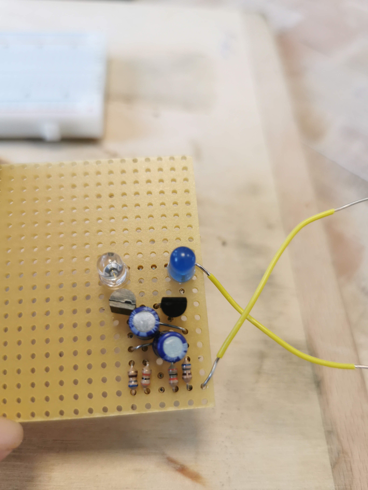
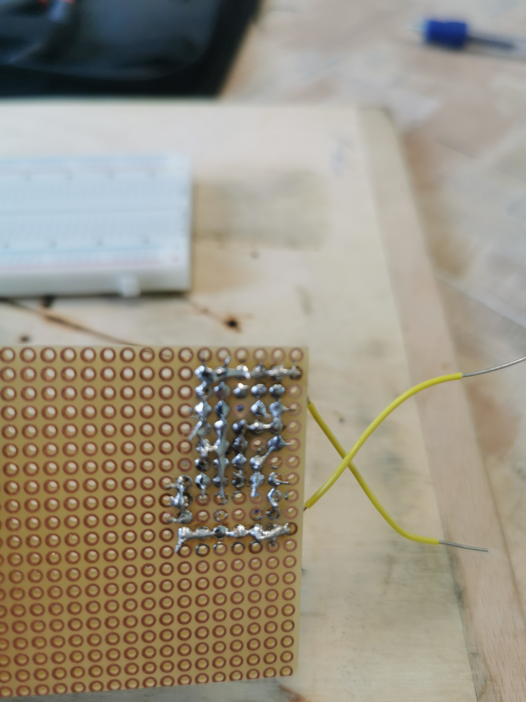

Ezt megépíteni durván 70 percet vett igénybe de működésre bírtam!
Aztán következett a próba NYÁK-ra forrasztása az alkatrészeknek!


Minden nagyon szépen indult , beforrasztottam mindent de azzal ,hogy mit mivel kellett volna összekötnöm már nem voltam teljesen tisztában. Igaz nem felváltva de VILÁGÍTOTT , minél több feszültséget adtam neki annál erősebben!
Mivel nem minden volt jól összekötve így nem bírta el az előírtaknak megfelelő feszültséget amit kipróbátam rajta és kiégett rendesen.